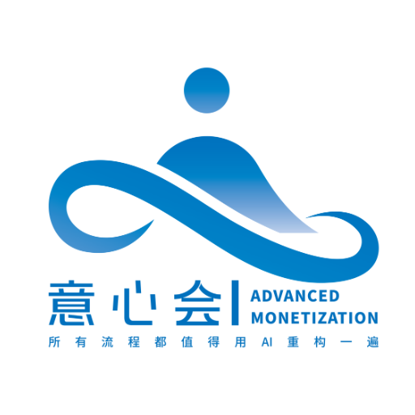

意心会 · 重庆线下沙龙
已报名学员课前入口2026.10.18 · SUNDAY
如何用AI搭建
个人目标管理系统
带着自己想理清的一件事来。
先说说你的日常安排和学习期待，我们据此准备现场交流。
- 时间
- 10月18日（周日）14:00—18:00
- 地点
- 重庆 · 意心会总部两江新区金山街道出口加工区三路1号
8号楼2层8号 - 老师
- 狼格拉底
问卷共15个主问题，按真实情况填写即可。不收集设备或安装情况，也不需要上传敏感资料。答卷不公开。
填完问卷，再做准备
看到飞书“提交成功”后，可点成功页里的准备链接；也可以返回本页查看。软件下载和课前测试放在准备说明里。